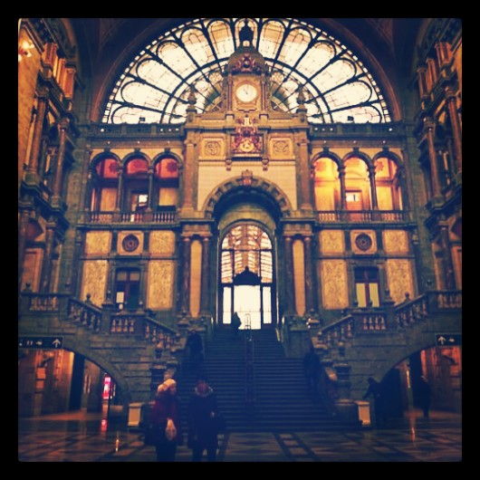
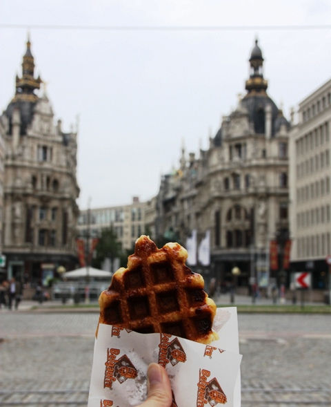
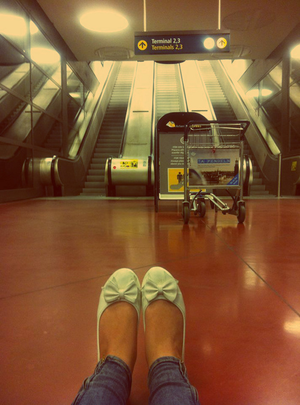
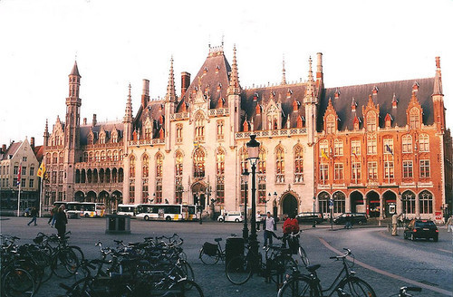

HOME | EDUCATION | SKILLS | HOBBIES Photographing Handmades Travelling Reading | TRAINING & EXPERIENCE
HOME | EDUCATION | SKILLS | HOBBIES Photographing Handmades Travelling Reading | TRAINING & EXPERIENCE
If there was one piece of advice I have for people today to experience more joy in life, it is to travel more. I don’t mean taking vacations or going on pre-planning trips, I mean making the journey out to somewhere you’ve never gone before with an open schedule, to let life show you what opportunities were waiting for you that you couldn’t have even imaged before.Traveling is wonderful in many ways.
It captures us with a sense of wanderlust and has us longing for more destinations to visit, cultures to experience, food to eat, and people to meet. As amazing as traveling is, most of us think we need to wait until our later years to really explore a lot of the world.
I want to inspire you to travel more now and I will do that by sharing 9 wonderful benefits of traveling so you can take the leap of faith you’ve been waiting for.
- You’ll find a new purpose.
- You’ll appreciate your home more.
- You’ll realize that your home is more than just where you grew up.
- You’ll realize how little you actually knew about the world.
- You’ll realize that we all share similar needs.
- You’ll realize that it’s extremely easy to make friends.
- You’ll experience the interconnectedness of humanity.
- You’ll experience serendipity and synchronicity.
- You’ll realize life is a wonderful gift.

At Brussels Train Station

At Antwerp

At Roma's Train Station

At Paris Airport

At La Grand Palace Brussels
At London
Travelling Europe

Follow Me on Social Networks